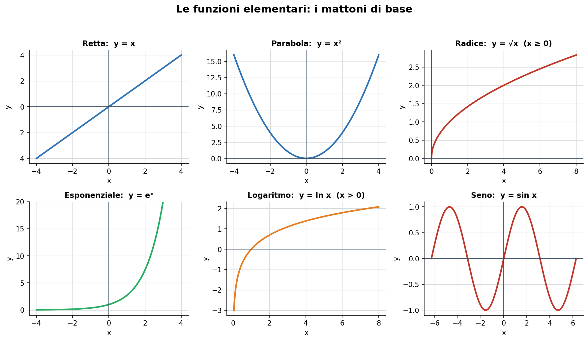
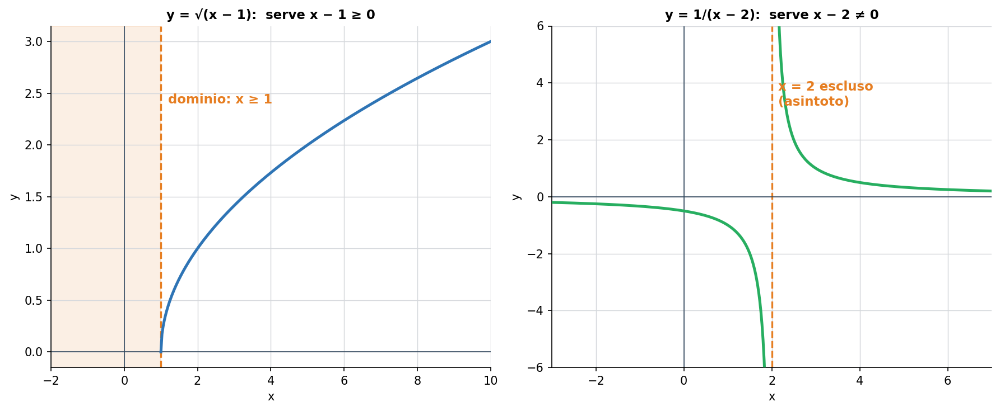
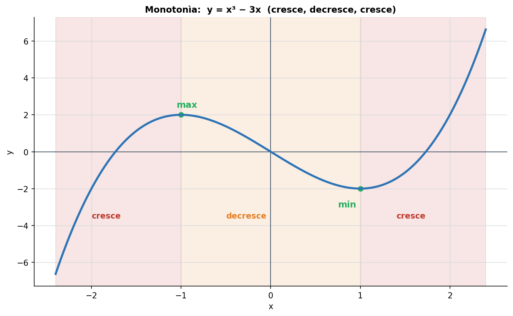
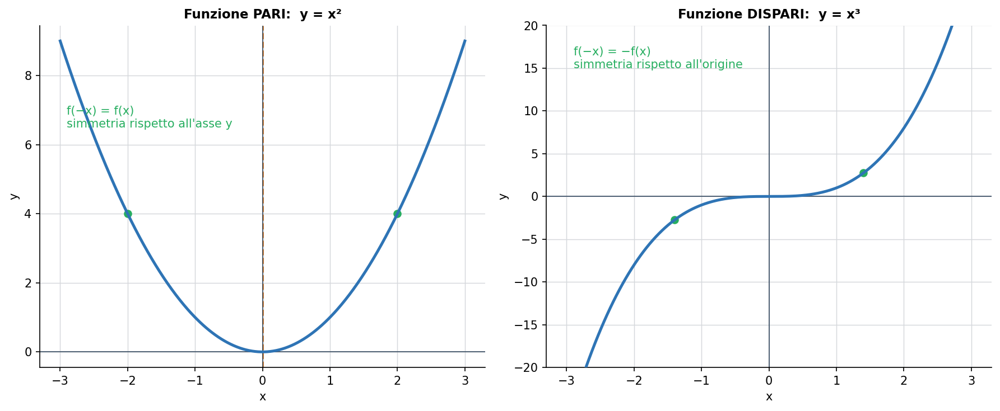
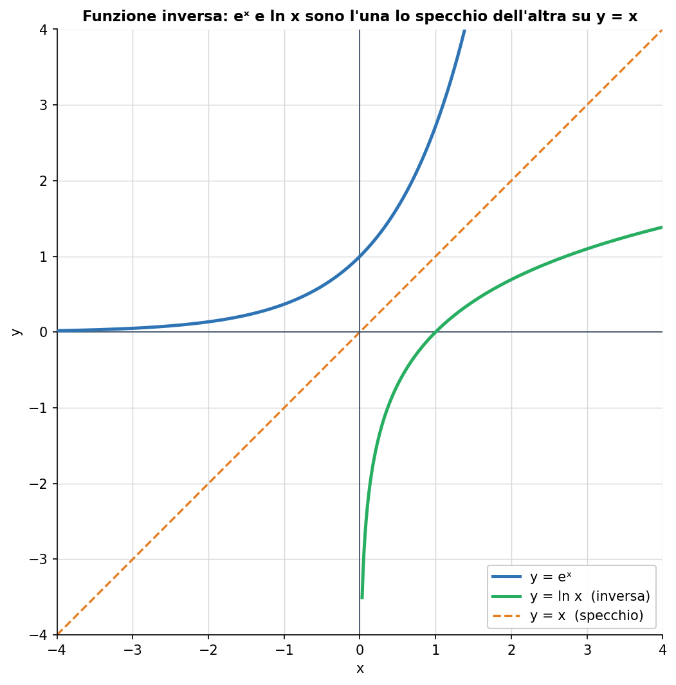

Blocco Fondamenti del programma di Udine (MATH-03/A). Uno degli obiettivi ufficiali del corso è “saper descrivere e rappresentare graficamente le proprietà qualitative delle funzioni di una variabile”: è il cuore di questa lezione, e la base su cui poggeranno limiti, derivate e integrali.
1. Che cos'è una funzione
Una funzione è una regola che associa a ogni valore di ingresso un solo valore di uscita. L'immagine mentale è una macchina: entra un numero x, esce un numero y = f(x). La condizione “un solo valore di uscita” è essenziale: a ogni x corrisponde una e una sola y.
Tre insiemi la descrivono:
Dominio: tutti i valori di x ammessi (gli ingressi validi della macchina).
Codominio: l'insieme in cui cadono le uscite (di solito i numeri reali).
Immagine: i valori di y effettivamente prodotti dalla funzione.
2. Le funzioni elementari
Quasi tutte le funzioni che incontrerai sono combinazioni di pochi “mattoni”. Riconoscerli a colpo d'occhio è metà del lavoro.

Fig. 1 — I mattoni di base: retta, parabola, radice, esponenziale, logaritmo, seno.
Retta y = mx + q: crescita costante; m è la pendenza (in elettrotecnica, la legge di Ohm).
Parabola y = x²: cresce sempre più in fretta; è pari (simmetrica).
Radice y = √x: definita solo per x ≥ 0; cresce sempre più piano.
Esponenziale y = eˣ: crescita rapidissima; modella carica/scarica e crescita.
Logaritmo y = ln x: definito solo per x > 0; è l'inverso dell'esponenziale (decibel, scale di frequenza).
Seno y = sin x: oscilla tra −1 e 1; è la forma d'onda della corrente alternata.
3. Il dominio: dove la funzione “vive”
Trovare il dominio significa scartare i valori di x che rompono la formula. Le tre regole più frequenti:
Frazioni: il denominatore non può essere zero.
Radici di indice pari: ciò che sta sotto radice deve essere ≥ 0.
Logaritmi: l'argomento deve essere > 0 (strettamente positivo).

Fig. 2 — A sinistra √(x−1) esiste solo per x ≥ 1; a destra 1/(x−2) esiste per ogni x tranne x = 2.
Esempio svolto. Per f(x) = √(x − 1) serve x − 1 ≥ 0, cioè x ≥ 1. Per f(x) = 1/(x − 2) serve x − 2 ≠ 0, cioè x ≠ 2 (in quel punto il grafico ha un asintoto verticale).
4. Le proprietà qualitative
Sono le caratteristiche che permettono di “leggere” una funzione senza calcolarne ogni punto — esattamente ciò che chiede il programma.
Monotonìa: cresce o decresce?
Una funzione è crescente su un intervallo se, spostandosi verso destra, il valore sale; decrescente se scende. Molte funzioni alternano tratti crescenti e decrescenti, separati da punti di massimo e minimo.

Fig. 3 — y = x³ − 3x: cresce fino al massimo, poi decresce fino al minimo, poi cresce di nuovo.
Simmetrie: funzioni pari e dispari
Una funzione è pari se f(−x) = f(x): il grafico è simmetrico rispetto all'asse y (come la parabola). È dispari se f(−x) = −f(x): il grafico è simmetrico rispetto all'origine (come x³ o il seno). Riconoscere la simmetria dimezza il lavoro di studio.

Fig. 4 — A sinistra una funzione pari (simmetrica rispetto all'asse y); a destra una dispari (simmetrica rispetto all'origine).
Funzioni limitate
Una funzione è limitata se i suoi valori restano dentro una fascia (come il seno, sempre tra −1 e 1); è illimitata se possono crescere senza confine (come la parabola o l'esponenziale).
5. Funzione inversa e funzione composta
Funzione inversa
Se una funzione associa ingressi e uscite in modo che ognuna sia distinta (è biiettiva), si può “tornare indietro”: la funzione inversa f⁻¹ recupera l'ingresso a partire dall'uscita. Graficamente, f e f⁻¹ sono l'una lo specchio dell'altra rispetto alla retta y = x.

Fig. 5 — L'esponenziale e il logaritmo sono funzioni inverse: si riflettono sulla retta y = x.
Esempio. y = eˣ ha per inversa y = ln x. In elettronica questo è il legame tra grandezze lineari e decibel.
Funzione composta
Comporre significa mettere due macchine in fila: l'uscita della prima diventa l'ingresso della seconda. Si scrive g(f(x)): prima si applica f, poi g.
Esempio svolto. Se f(x) = x + 1 e g(x) = x², allora g(f(x)) = (x + 1)². Attenzione all'ordine: f(g(x)) = x² + 1 è un'altra funzione.
6. A cosa serve in elettronica
Un segnale è una funzione del tempo: v(t), i(t). Studiarne dominio, simmetrie e monotonìa significa capire il segnale.
La scomposizione di un segnale in parte pari e parte dispari è la base dell'analisi di Fourier (Teoria dei segnali).
Le coppie inverse esponenziale/logaritmo governano i decibel e le scale logaritmiche dei diagrammi di Bode.
Errori tipici da evitare
Dimenticare le condizioni di esistenza (denominatore ≠ 0, radice ≥ 0, logaritmo > 0) quando si cerca il dominio.
Confondere “pari” con “simmetrica rispetto all'origine”: pari = asse y, dispari = origine.
Nella composizione, invertire l'ordine: g(f(x)) e f(g(x)) sono in generale diverse.
Credere che ogni funzione abbia un'inversa: serve che sia biiettiva (a volte solo dopo aver ristretto il dominio).